版位排版工具操作手冊
從匯入工單、做曝光資源與活動頁資源，到取色、吸底和整包交件，照這份手冊一步一步做就能完成一檔活動。截圖都是工具的實際畫面，橘色框和編號對應旁邊的說明。
第一次打開怎麼做
左側導覽列就是依序製作的六個步驟，點一下就切換；第一次打開會在「匯入工單」，之後重新打開會回到上次所在的步驟。拿到窗口填好的工單後，從「1 匯入工單」開始。
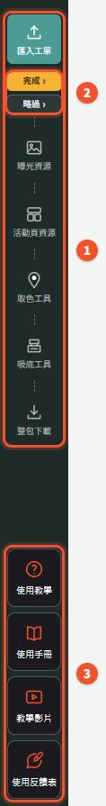
- 1製作流程：匯入工單 → 曝光資源（BN 先做）→ 活動頁資源（MS）→ 取色工具 → 吸底工具 → 整包下載，照順序往下做。
- 2完成／略過：目前步驟下方會出現「完成 ›」「略過 ›」，按下就標記狀態並前往下一步，完成的步驟會打上勾。這次用不到的步驟按略過即可。
- 3教學與說明：「使用教學」是互動導覽，「使用手冊」就是這份文件，「教學影片」上線後在這裡看，「使用反饋表」回報問題。
- 清除重置（使用教學上方的紅色虛線按鈕）：把工單、圖片、活動頁資源、曝光資源的版位勾選、案型、底色與配色、取色工具、吸底、等級全部清掉，回到全新狀態。清除後無法復原，需要的話請先整包下載備份。
在「匯入工單」上傳工單與圖片，並確認等級（下一節）。等級決定活動頁資源要畫幾張 MSBN、有沒有吸底，也決定曝光資源可使用哪些版位。
工具會自動把進度存在這台電腦的瀏覽器裡，重新整理會回到上次的畫面。但這只是本機暫存，換電腦或清除瀏覽器資料就會不見，重要進度請記得下載暫存檔（見「下載與暫存」）。
先選對等級
等級名稱就是工單總覽上的「包套」。各等級在活動頁資源呈現的數量如下（「–」表示沒有）：
| 等級 | 三大保障 | 副區 | 基本 MSBN | 額外廠商自製 MSBN | 吸底 |
|---|---|---|---|---|---|
| 大促 Brand star | 1 | 1 | 8 | 8 | 1 |
| 大促 Brand star 資交 | 1 | 1 | 4 | 8 | 1 |
| AD單買(多店活動) | 1 | 1 | 8 | – | 1 |
| AD單買(BN Only) | – | – | – | – | – |
| A BOD+ | 1 | 1 | 8 | 8 | 1 |
| A BOD | 1 | 1 | 8 | 8 | 1 |
| A BOD+(資交) | – | – | – | 8 | 1 |
| A BOD(資交) | – | – | – | 8 | 1 |
| B級 JBP(多店活動) | 1 | 1 | 3 | – | 1 |
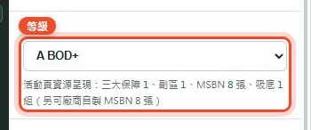
- 四個地方同步：匯入工單、活動頁資源、曝光資源（左側最上面）、吸底工具都有「等級」下拉，改任何一個，其他會一起變。
- 上傳工單會自動切換：工單總覽的「包套(等級)」會在匯入時自動帶入等級。
- 活動頁資源只畫該等級有的張數：例如資交等級不畫三大保障、副區與基本 MSBN；AD單買(BN Only) 只有曝光資源，活動頁資源不呈現任何版位，也沒有吸底。
- 資料不會被刪：被等級隱藏的欄位只是不畫、不下載，切回有包含的等級就會再出現。
- 曝光資源依等級顯示：系統讀取「MS與BN曝光版位.xlsx」D 欄的等級，L～X 欄有打勾的版位才會出現在左側。
匯入工單：上傳工單與圖片
製作流程的第 1 步。把填好的工單和圖片放進來，工具會依內容畫出曝光資源、活動頁資源（副區、MSBN）與吸底，並把共用文案送到曝光資源。
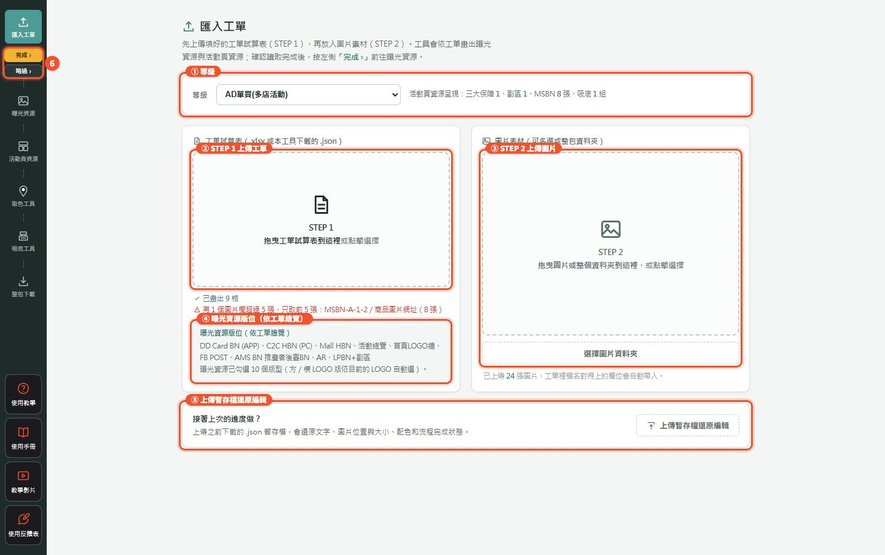
- 1確認等級：上傳工單時會依「包套」自動切換，也可以手動改。
- 2STEP 1：上傳工單。把 .xlsx（或本工具下載的 .json）拖進虛線框，或點一下選檔。框下方會寫讀取結果，例如畫出幾格、哪些圖片欄超過 5 張。
- 3STEP 2：上傳圖片。可以多選，也可以拖整個資料夾，或按「選擇圖片資料夾」。圖片會依工單裡的檔名自動對到欄位，下方會寫已上傳幾張。
- 4曝光資源版位：工單總覽「版位」欄的黃底版位，會列在這裡，曝光資源會照這份清單勾選（見「工單總覽要填什麼」）。
- 5上傳暫存檔還原編輯：要接著上次的進度做，就在這裡載回之前下載的 .json。
- 6完成：確認讀取完成後，按左側「完成 ›」前往曝光資源。
工單裡一格要放多張圖時用逗號分開，每格最多 5 張，超過只取前 5 張。圖片先比完整檔名，再做精準主檔名比對：忽略資料夾路徑、副檔名大小寫、前後空白、零寬字元與全形／半形差異；找不到時再做安全的寬鬆比對，額外忽略空白、底線、連字號與「・」。每一層都只有一個候選時才自動帶入；若兩個檔名都可能符合（包含同主檔名同時有 PNG／JPG），工具會列為「有歧義」而不猜圖。
工單總覽要填什麼
工單的「工單總覽」頁簽放的是曝光資源共用的內容。字數規則一律是中文算 1、英數算 0.5。
| 欄位 | 上限 | 工具怎麼用 |
|---|---|---|
| 包套(等級) | 下拉選單 | 匯入時自動切換等級；MSBN 額度會跟著算出來。 |
| 主標 | 8 字 | 曝光資源各版位的主標。 |
| 副標 | 7 字 | 曝光資源各版位的副標。 |
| 日期／警語 | 14 字 | 日期、活動期間或警語。 |
| 曝光資源圖片 | 3 張 | 商品圖檔名，多張用逗號分隔。 |
| 背景顏色 | #RRGGBB | 與曝光資源、取色工具的背景色同步，活動頁資源的畫布也跟著用。 |
| 品牌名 | 9 字 | 曝光資源品牌名。 |
| SearchICON文案 | 2 字 | Search ICON 文字版。 |
| AR文案 | 6 字 | AR 版位文案。 |
| 代言人照+簽名檔路徑(將取代2品) | 2 張 | 在這格右邊那格填兩個檔名，用逗號、＋號或換行分開都可以。 |
| 代言人小字 | 10 字（兩排、每排 5 字） | 在這格右邊那格填文字，字級、顏色照 MSBN 的規則。超過 10 字時曝光資源會標紅、不能下載。 |
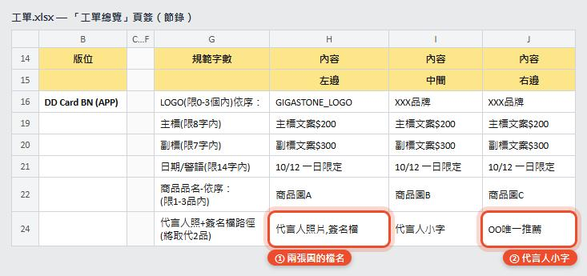
「版位」欄：曝光資源自動勾選
工單總覽的「版位」欄裡，黃底的列是曝光資源的版位（綠底是活動頁資源）。匯入工單時，曝光資源的「排版選擇」會照這份清單勾：
- 有列到的勾選、沒列到的取消勾選。名字用模糊比對，例如「DD Card BN (APP)」對到 ddcard、「C2C HBN (PC)」「Mall HBN」對到 HBN、「FB POST」對到 FB_POST、「AMS BN 推廣者後臺BN」對到 AMS。
- LPBN 只在曝光資源做，所以「LPBN+副區」這種寫在綠底的也會勾 LPBN_APP、LPBN_PC。
- 等級表沒有勾選的版位不會加進排版選擇；若工單列了該版位，「匯入工單」會提示沒有對應的可用版型。
- 有方／橫 LOGO 兩版的版位，會再依目前的 LOGO 自動選一版。
- 之後可以自己再勾或取消，重新整理也會保留；重新匯入工單才會再照工單勾一次。
- 對不到的名字會列在「匯入工單」頁 STEP 1 下方，方便檢查。
工具怎麼分辨哪張是照片、哪張是簽名檔
- 先看檔名：檔名有「簽名、簽、sign、signature」就當簽名檔；有「代言、照、photo、人像、形象」就當代言人照。
- 檔名看不出來就看圖：線條細、大面積留白或透明的判斷成簽名檔，另一張當照片。
- 還是判斷不出來：照填寫順序，第一張是照片、第二張是簽名檔。
判斷錯了也沒關係，在曝光資源的代言人清單按「⇄」就能互換。同一份工單重新送一次，不會蓋掉你手動調好的位置、角度和小字。
最穩的做法仍是讓工單與 STEP 2 圖片使用同一個檔名，並直接在代言人檔名寫「代言人照」「簽名檔」。工具可容忍全形／半形、空白、底線與連字號差異，但不會用相似字或任意模糊猜測；遇到多個可能檔名時會要求人工確認。
曝光資源：畫面總覽
左側是工具列，右側每一塊是一張獨立版位，標頭寫版位名稱與尺寸。工單匯入後，主標、副標、日期、品牌名、圖片和代言人資料會自動帶進來。
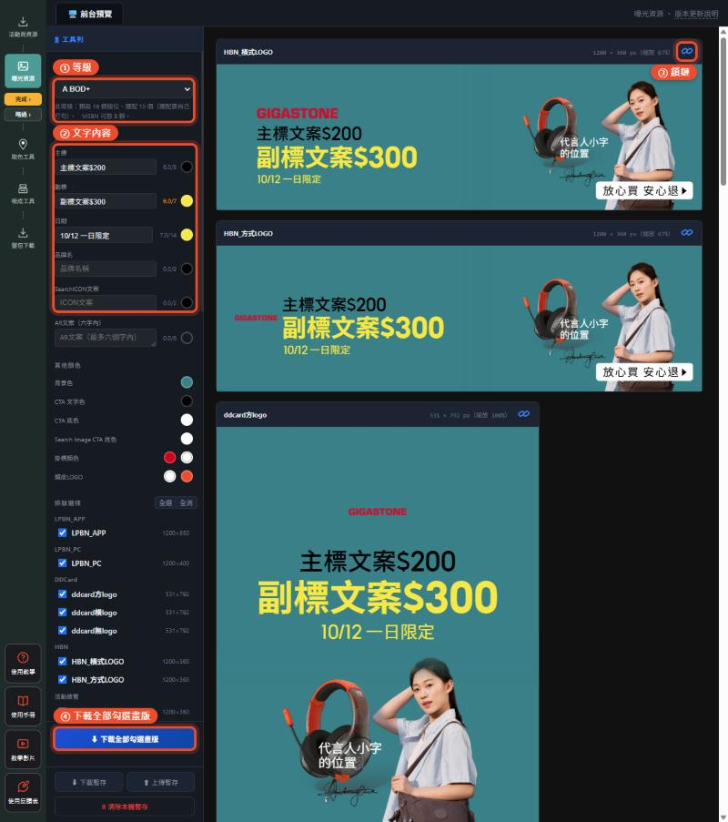
左側工具列由上而下：
- 1等級：跟整個工具同步，只顯示「MS與BN曝光版位.xlsx」該等級有打勾的版位。
- 2文字內容：主標、副標、日期、品牌名、SearchICON文案。欄位旁有字數提示，旁邊的圓點是這段文字的顏色。
- 其他顏色：背景、CTA 等顏色；點色票可以輸入色碼或吸取螢幕顏色。
- Logo 上傳、商品圖、代言人、背景圖：見下面幾節。
- 排版選擇：勾選這次要出的版位，可以全選、全消。匯入工單時會依工單總覽「版位」欄自動勾好（見「工單總覽要填什麼」）。
- 3鎖鏈：每張版位標頭右上角，決定這張要不要跟其他版位連動（見「鎖鏈」一節）。
- 4下載此資源檔案：只輸出曝光資源目前勾選的版位。下方還有「下載暫存」「上傳暫存」「清除本機暫存」。
右側每一張都要捲動檢查，不要只看第一張。文字出現紅框（超出字數）或橘色內容提醒時，要先處理才能下載。
Logo、商品圖、背景圖
- Logo 上傳（最多 3 張）：點擊或拖曳上傳，再調整大小與位置。
- 商品圖（最多 3 張）：按「＋ 上傳商品圖」開上傳視窗，確認圖片、相對大小與排列後套用。中間固定是比較大的主品；左右可以拖曳或用箭頭換位。
- 在畫布上調整商品：先點一下商品，四角出現縮放點、上方出現旋轉把手。拖商品是移動，拖四角是等比縮放，拖把手是旋轉；點空白處收起。
- 商品影子：商品區新增「全體商品影子顏色」，選色後按「套用全部」會一次重製所有商品影子，之後換背景也保留固定色；按「依背景自動」可恢復背景建議色。商品清單的「影子」或「編輯 → 加／編輯影子」只調開關、光源方向、位移、寬度與長度，不再各自選顏色。批次換色不會改動商品的位置、大小、裁切、旋轉或前後順序。
- 人物圖 1／2：上傳 1 張人物圖時，商品最多只顯示最上層 2 件；上傳第 2 張時，商品圖完全不顯示。移除人物圖後會自動恢復。
- 背景圖：按「上傳背景圖」開背景圖庫，分 EL、Fashion、FMCG、Lifestyle 四大類。每個版位可以在右側各自調整縮放與位置。
代言人：照片、簽名檔、小字
左側「代言人（照片＋簽名檔，不加影子）」區塊，管理方式跟商品圖一樣，但兩張圖都不會加影子。
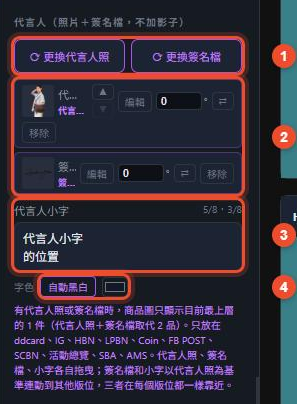
- 只放在這些版位：ddcard、IG、HBN、LPBN、Coin_pageBN、FB_POST、SCBN、活動總覽、SBA、AMS。首頁 LOGO 牆、AR、Search_Image、SearchICON 不放。
- 會取代 2 件商品：有代言人照或簽名檔時，商品圖只顯示最上層的 1 件；如果同時還有人物圖，商品就完全不顯示。
- 1上傳／更換：按「＋ 上傳代言人照」「＋ 上傳簽名檔」，或由工單自動帶入。
- 匯入時的預設位置：代言人照在右邊；照片左邊，上面是代言人小字、下面是簽名檔，三者不重疊、緊靠在旁邊，小字＋簽名整組的高度約在照片的中間。之後可以自己拖曳調整。
- 2清單按鈕：「▲▼」決定代言人照在商品前面或後面；「編輯」可以裁切、去背、擦除（沒有影子功能）；角度欄直接輸入旋轉角度；「⇄」互換照片和簽名檔；「移除」刪掉這張。
- 在畫布上旋轉：拖圖片上方的旋轉把手（按住 Shift 每 15° 一格，雙擊回到 0°）。旋轉後看起來的大小不變。
代言人小字
- 3字數：最多 10 字，兩排、每排 5 字（中文 1、英數 0.5）。打滿一排會自動換到第二排，也可以按 Enter 自己換排；打字或貼上超過 10 字會直接擋住。工單帶入超過 10 字時，字數會變紅、不能下載，請刪到 10 字內。
- 字級固定：跟 MSBN 一樣，1200 寬的版位用 24px，其他版位依寬度等比換算：AMS 22px、ddcard 21px、SBA_PC 20px、IG 18px。滑鼠滾輪不能放大縮小。
- 4字色：預設「自動黑白」。工具會取小字中心下方的圖片像素；透明部分會與實際卡片／畫布背景合成後再判斷，不再一律當白底。合成亮度低於 0.48 用白字
#ffffff，否則用深色字#111827。想指定顏色可以直接選色；要回到自動，再按一次「自動黑白」。
代言人在各版位自動配合
不用每個版位都調。HBN 是主要指標、LPBN 是第二指標：在這兩個版位調好代言人，其他版位會自動排好。
| 跟著誰 | 版位 |
|---|---|
| HBN | HBN（橫式／方式）、活動總覽、AMS、SCBN、SBA_PC（跟 HBN 一樣扁或更扁的版位） |
| LPBN | LPBN_APP、LPBN_PC、FB_POST、ddcard、IG、Coin_pageBN、SBA_APP（比 HBN 高、比較方的版位） |
- 只調 HBN 也可以：LPBN 還沒調整過之前，第二組也先跟 HBN。
- LPBN 調過之後：第二組改跟 LPBN，之後再改 HBN 不會動到這一組。換一張代言人照，就會重新全部跟 HBN。
- 人不會被切：自動排的版位，代言人照左、右、上方都不會超出畫面；底部可以出血，比例跟 HBN 一樣。
- 不壓文字區：照片、簽名檔、小字都會避開主標、副標、日期、品牌名與 Logo。CTA 按鈕不算文字區，人像可以在按鈕後面；簽名檔或小字被按鈕蓋住太多時，只會把它們挪開，人像大小不變。
- 簽名檔＋小字是一組：兩者的大小跟著小字的 24px 規則換算，跟人像保持一樣的距離，不會因為版位比例被拉遠。
- 在其他版位手動拖：只會改那一張（和它的方／橫雙胞胎），不會回頭改 HBN 或 LPBN；那一張也不再自動調整。之後 HBN 或 LPBN 再調整時，這一張會重新跟著，手動調的位置會被蓋過。想一直保留，就解除那一張的鎖鏈。
- 舊的暫存檔：打開舊暫存時，工具會以 HBN 的排法自動換成新規則，不用重調。
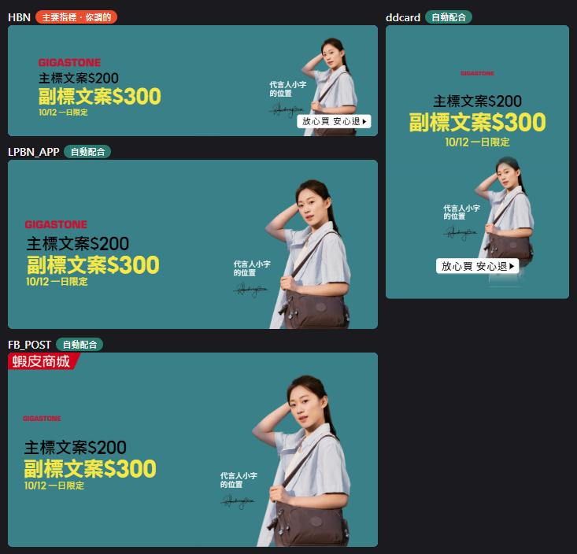
自動配合只套用在鎖鏈是連動中的版位。某一張解除連動後，它就保留自己的排法，不會再跟著 HBN 或 LPBN。
鎖鏈：連動與單張獨立
每個版位標頭右上角都有一個鎖鏈圖示，預設是連動中。
- 連動中：商品、人物圖、代言人的位置與大小，會依各版位的規則跟著一起變。
- 點一下解除：這一張變成獨立編輯，怎麼調都不影響其他版位。
- 再點一下重新加入：這一張會套回目前大家共同的排法，之後繼續跟著連動。
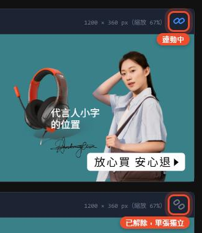
首頁 LOGO 牆、SearchICON_PRODUCT 有各自的排法，不參加這套連動，標頭也不會出現鎖鏈。
活動頁資源：編輯 MSBN、副區
曝光資源做完，再到活動頁資源檢查與微調副區、MSBN 成品。畫布底部仍可預覽吸底，但吸底檔案請從「吸底工具」下載。工單和圖片要先在「匯入工單」上傳。
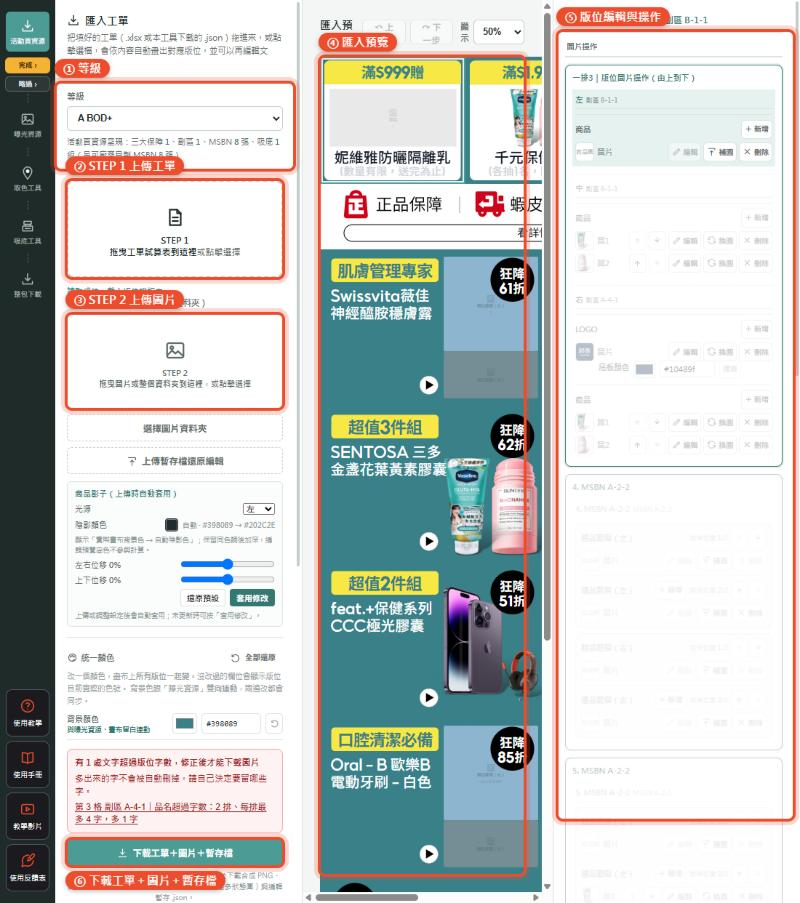
- 1等級：跟匯入工單頁同一個，決定這裡畫幾張三大保障、副區、MSBN。
- 2商品影子：上傳商品圖時自動加影子，可選光源（左／中／右／關閉）和位移；背景換色時會依活動頁本身的 HSL 規則自動重製影子，原本方向與位移不變。改了設定沒更新時按「套用修改」。
- 3統一顏色：只列出目前畫布實際用到的色彩角色，色號直接讀取渲染後的畫布；同一角色因底色自動使用兩種字色時也會標示。工具列改色會立即重畫畫布，切頁或外部配色變更則會先重畫、再把畫布實際色反向同步回工具列。背景色不在這裡改，請到曝光資源或取色工具調整，這裡的畫布會自動跟著。
- 4看預覽：中間是所有版位的成品預覽，上方可以調顯示比例。
- 5檢查與微調：滑過預覽只會暫時對應；點一下要修改的版位會鎖定該格，再把滑鼠移到右側也不會被途中經過的其他格切換。點另一格可直接改鎖定目標，右側「已鎖定｜解除」可恢復自動跟隨。右側可改文字、換圖、刪圖和調前後順序；移動或縮放圖片時可以按「↶ 上一步／↷ 下一步」，或用 Ctrl Z／Ctrl Shift Z。
- 6下載此資源檔案：只下載活動頁資源目前畫布的合成圖、副區整排 PNG 與 MSBN 單張 PNG，不包含吸底、曝光、工單、色票或暫存檔。上方有紅色提醒（例如字數超過）時要先處理；完整交付請按最左側「整包下載」。
- CTA 不用白色：CTA 底色跟曝光資源連動；曝光資源的 CTA 是白色時（例如深底配白主標），活動頁資源會自動改用在白卡片和背景色上都看得清楚的顏色（背景色的深色、品牌橘等），字色跟著調整。
- 圓標不可與 CTA 同色：CTA 保留跨工具共用色；圓標預設跟副標色，若自動配色、手動選色或舊暫存造成兩者同色，系統會立即把圓標換成另一個安全色，工具列、畫布與下載結果一致。
- 直接預覽全部版位：不用匯入檔案，每個版位各顯示一次，方便先看長相。
- 清除畫面內容：版位保留，文字回到示範文字、圖片清空；統一顏色和已上傳的圖片素材不會刪除。
取色工具
「HBN Banner 取色工具」有兩個分頁：
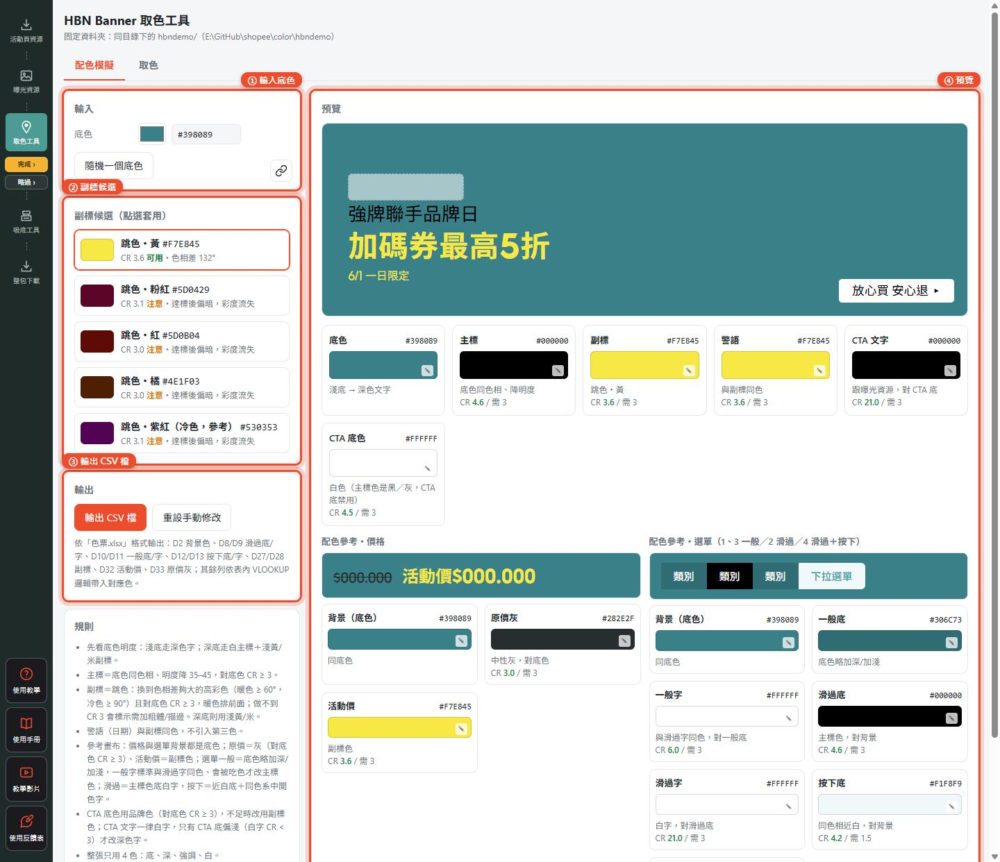
- 配色模擬：1輸入底色，工具依規則算出主標、副標、警語與 CTA 的顏色，4右側即時預覽。2副標有多個候選色，點一下就套用。底色欄位旁的連結圖示亮著時，表示跟曝光資源底色連動中。3完成後按「下載此資源檔案」，只下載目前取色結果 CSV，格式對應色票.xlsx。
- 取色：載入 HBN 圖片資料夾，或直接把圖片拖進來，工具會抓出每張圖的底色、主標、副標、警語、CTA 文字與 CTA 底色，並標出對比度；可以複製或下載 CSV。
配色原則：整張只用四色（底、深、強調、白）；淺底配深色字，深底配白主標＋淺黃或米色副標；CTA 文字原則上用白字。
吸底工具
做頁面底部那條 1200 × 150 的促銷橫幅。一條有 2～5 顆「icon＋文字」，匯出時每張反白一顆、其他轉灰，一次出齊。
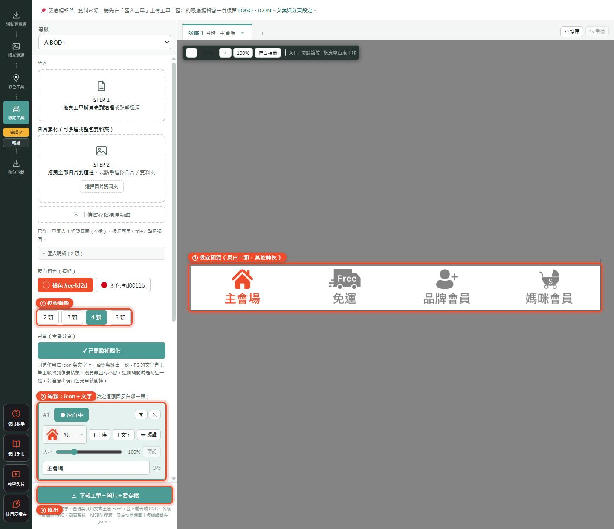
- 資料來源：請先在匯入工單上傳工單；LOGO、ICON、文案與分頁設定會一起帶進來。
- 步驟：1選模板顆數 → 2每顆點縮圖選 icon（可搜尋），需要時用「大小」滑桿調整（50%～250%），再輸入文字（建議 5 字內）→ 3在預覽確認 → 4匯出。
- 紅字提醒：圖片放太大、壓到文字或超出邊界時會出現紅字。紅字不會擋匯出，但請回頭看一下畫面。
- 等級：吸底也有等級下拉，跟整個工具同步；AD單買(BN Only) 沒有吸底。
- 下載此資源檔案：只下載吸底工具目前所有分頁的多狀態 PNG，以及可繼續編輯的吸底進度存檔。
下載與暫存
只下載目前這一頁：工單生成器輸出該頁工單與版型；曝光資源輸出勾選版位；活動頁資源輸出合成圖、副區與 MSBN；取色工具輸出 CSV；吸底工具輸出吸底多狀態圖與吸底進度存檔。
這是唯一的完整交付入口：回填文字、色碼與共用文案到原 Excel，並附所有頁圖片（活動頁、曝光與吸底）、色票和編輯暫存 .json。還有步驟沒完成也沒略過時，會先提醒。
- 自動暫存：編輯中會自動存在這台電腦的瀏覽器，重新整理會還原。
- 換電腦接著做：用下載的 .json 暫存檔載回：曝光資源是左側工具列最下方的「上傳暫存」，活動頁資源是「匯入工單」頁最下方的「上傳暫存檔還原編輯」。
- 清除重來：曝光資源左側最下方有「清除本機暫存」。清除前請先下載暫存檔備份。
文字超出字數上限，或文案內容提醒還沒確認時，工具會擋下下載並跳出提示。打包期間請等它跑完，不要關閉分頁。
常見問題與已知限制
- 活動頁資源找不到上傳工單的地方？工單與圖片的上傳改在左側第一步「匯入工單」，活動頁資源只負責編輯。
- 活動頁資源怎麼不能改背景色？背景色統一在曝光資源或取色工具調整，活動頁資源會自動跟著。
- 曝光資源勾的版位跟工單不一樣？先看「匯入工單」頁 STEP 1 下方有沒有「對不到曝光資源版型」的名字；黃底才算曝光資源，名字寫法差太多時對不到，可以在曝光資源自己勾。
- 有些版位看不到代言人？首頁 LOGO 牆、AR、Search_Image、SearchICON 本來就不放代言人。
- 上傳代言人後商品變少了？代言人照＋簽名檔會取代 2 件商品，只留最上層 1 件；同時有人物圖時商品全部隱藏。
- 小字可以放大嗎？不行。小字字級固定照 MSBN 規則，每個版位都是換算後的正確大小。
- 某一張的代言人想自己排？在那一張直接拖曳即可，只影響那一張（和它的方／橫雙胞胎）；但之後改 HBN 或 LPBN 時會被蓋過。要完全獨立，就解除那一張的鎖鏈。
- 換電腦後內容不見了？本機暫存只存在原本那台電腦的瀏覽器，請用 .json 暫存檔或整包下載搬資料。
- 等級的曝光資源版位從哪裡來？讀取 BODA 根目錄的「MS與BN曝光版位.xlsx」；D 欄是等級名稱，L～X 欄有打勾才顯示。修改表格後重新整理曝光資源即可套用。